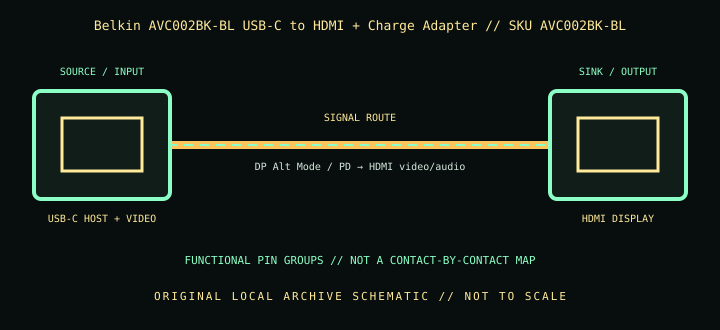

[ INDIVIDUAL COMPONENT // CABLES & ADAPTERS ]
Belkin AVC002BK-BL USB-C to HDMI + Charge Adapter
A tethered USB-C video adapter with HDMI output and separate USB-C power pass-through, intended to display video while charging a compatible host.

IDENTIFICATION: Catalog SKU: AVC002BK-BL. Record the complete label, regional suffix, hardware model/revision, and cable length printed on the specimen; nearby model variants are not interchangeable by assumption.
Specifications & connector revisions
| Catalog subcategory | Display cables and adapters |
|---|---|
| Manufacturer / SKU | Belkin AVC002BK-BL USB-C to HDMI + Charge Adapter — AVC002BK-BL |
| Connector ends / length | USB-C male host plug → HDMI Type-A female display; separate USB-C female power input; approximately 13 cm (5.1 in) tether. |
| Protocol and revision | Belkin rates HDMI output up to 3840 × 2160 at 60 Hz and USB-C Power Delivery pass-through up to 60 W. The USB-C PD input is for charging pass-through, not an additional video output. Actual host charge rate is affected by charger, cable, host limits, and power consumed by the host. |
| Signal path / pinout | Host USB-C provides DisplayPort Alt Mode video and USB-C configuration/control; HDMI output carries converted video/audio. The separate USB-C receptacle routes negotiated PD power to the host. It is a purpose-built adapter; do not treat ports as passive wired through-pins or infer a proprietary internal pinout. |
| Mode and bandwidth caveats | The short tether is not an extension cable. Connect the PD charger to the adapter’s power-input receptacle, not the host-side plug; verify the exact port labels and observe the charger/cable’s current rating. Do not expect 60 W delivered in addition to display load unless the host’s negotiated power budget supports it. |
Compatibility & direction
Requires a USB-C host that supports DisplayPort Alt Mode (or explicitly supported video mode), an HDMI display/cable, and a USB-C PD charger for pass-through charging. HDMI output is one-way. Charger wattage and host charging limits govern actual charge power; HDMI/USB-C connector fit alone is insufficient.
Handling & archival notes
Keep the stated source and sink ends in their specified direction; do not force keyed connectors or use this product as an assumed voltage/pinout substitute for a superficially similar cable. Support the tether during connection, keep contacts clean and dry, and avoid tight bends at molded strain reliefs.
For the archive, photograph both connector faces, labels, packaging SKU, length, and revision. If a mode is tested, record source model/GPU and firmware, sink model/firmware, intermediate adapters, cable run, resolution, refresh rate, chroma/HDR, and whether HDCP succeeds. Test results apply to that exact chain, not all variants.
Manufacturer and standards sources
- Belkin — USB-C to HDMI + Charge AdapterManufacturer product page for HDMI and charging functions.
- Belkin — AVC002BK-BL product supportManufacturer support locator for the exact black SKU.
Maximum modes are source-, sink-, firmware-, signal-path-, and revision-dependent. Manufacturer documentation for the exact SKU and hardware model takes precedence over family names and connector appearance.